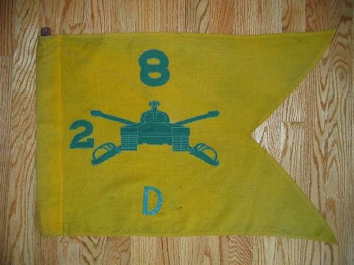

BACK
Robert Batts, Skipper 6, 1966 went with the 2/8th as communications
officer in 1965, with the advanced party, then served as commander
in 1966. Robert Batts turned over command of D 2/8 to James Guest. Bob
has the original Guidon that was taken from Ft. Benning to Nam in 1965.
Contributed by Robert Batts, Skipper 6, 1966
